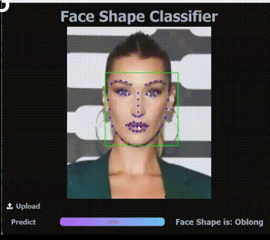
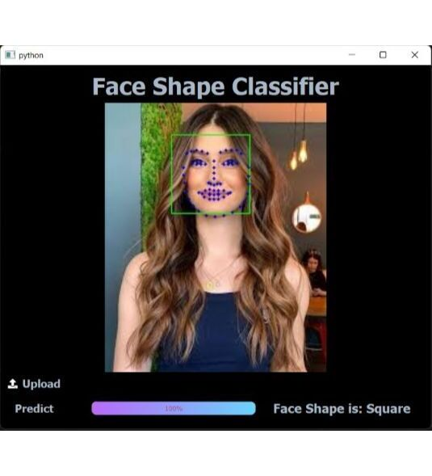
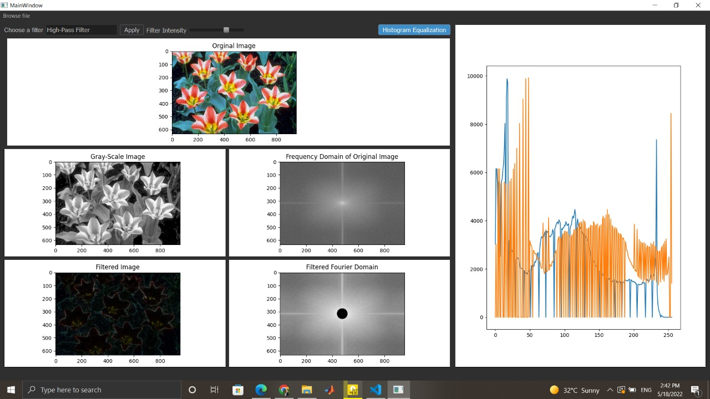
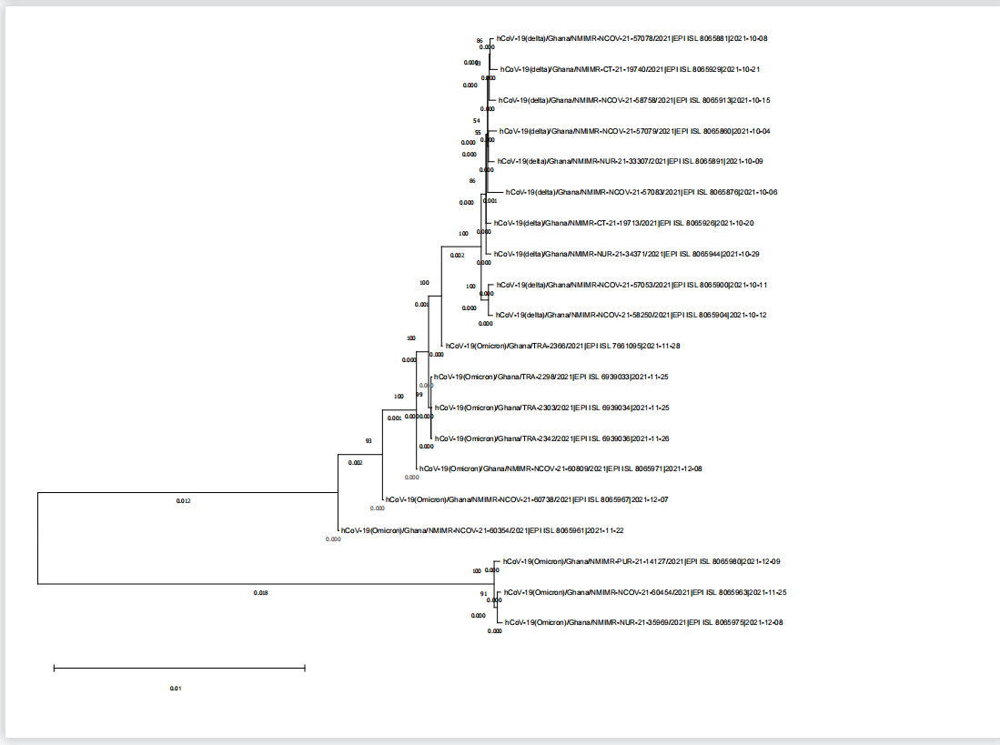
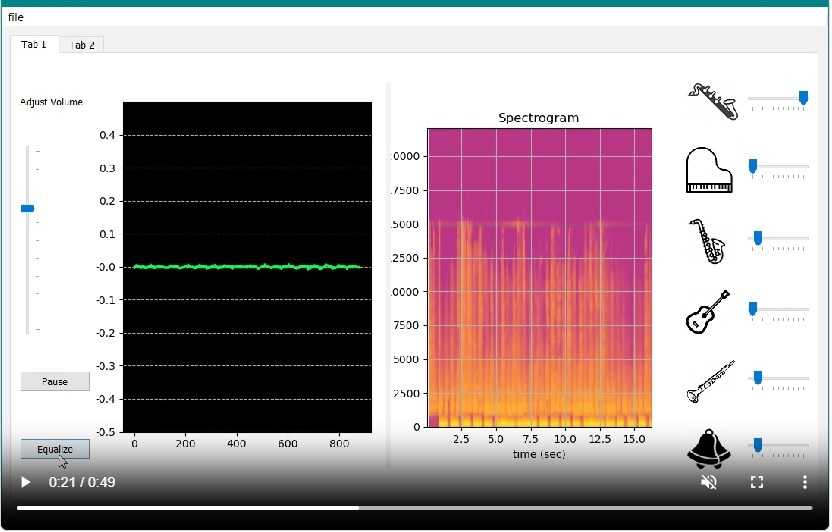
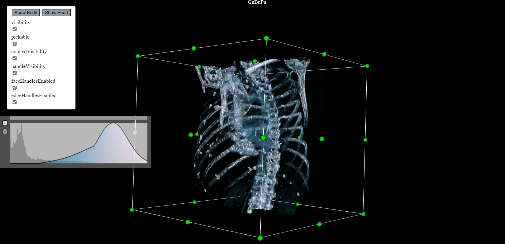
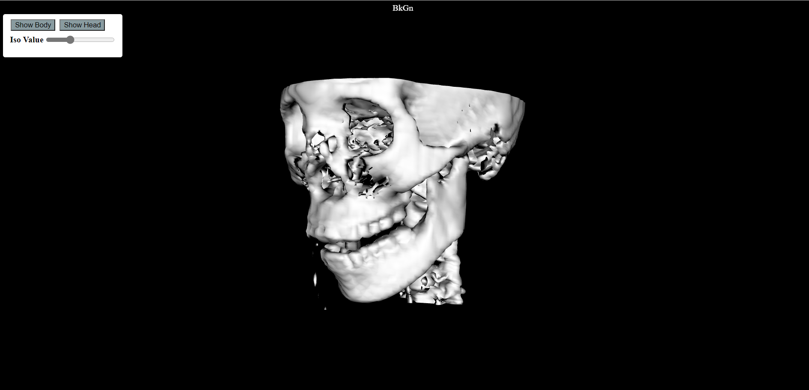
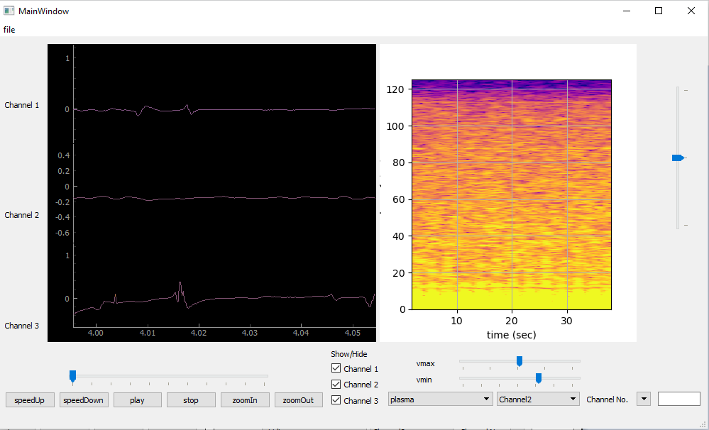
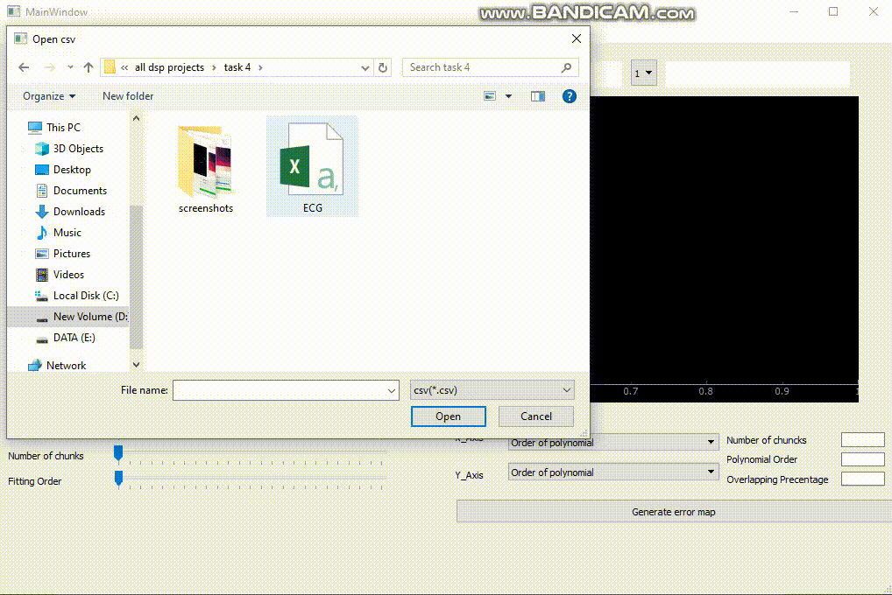

I am a Master's Student of Biomedical Engineering at The University of Calgary, Canada.
I gratuated with a Bachelor's degree of Systems and Biomedical Engineering from Cairo University, Egypt.
My interests are: Artificial intelligence, Machine learning, Neuroscience, Computer Vision, Image Processing,
Signal Processing, and Software Development.
FaceReminder
Assistive Mobile Application for Prosopagnosia Patients
FaceReminder is an assistive mobile application for Prosopagnosia(Face-blindness) patients, which is a neurological disorder affecting memory and perception leaving its patients unable to recognize familiar faces, even their own close ones.

Python, Pytorch, FaceNet, RetinaFace, Reactnative, Django
Face Shape Classification
Desktop Application by Swin Transformer
Desktop application to classify human face shape among 5 classes ( Oval, Square, Circle, Oblong, Heart ) and extract facial landmarks.
The model is based on Shifted Window Transformer ( Swin ) Architecture and pre-trained on Imagenet.


Python, Pytorch, Swin-Transformer, Hugging-Face, PyQT
Image Processing in Frequency and Spatial domains

Image Processing GUI using Python.
Implemented some image processing algorithms applicable on both RGB and grayscale Images with the ability to modify the kernel size (filter strength). Filters implemented and applied: Histogram Equalisation, Mean Filter, Median Filter, Low Pass Filter, High Pass Filter, Gaussian Filter, Sobel Filter, and Laplacian Filter
Python, PyQT, QtDesigner, OpenCV, FFT, Matplotlip
Relation between Covid-19 and Omicron Variant

A study to show the relation between Covid-19 and Omicron variant. The analysis was done by some techniques like Pyhlogenetic tree to show the variation between them. In addition, Python scripts were used to compare the sequences, calculate C,G ratios, and show the similarities and differences as well.
Python, Bio-Informatics, Bio-Statistics, Pyhlogenetic Tree
Music Equalizer and Virtual Instruments

A desktop application created by PyQT. Can be used as a Music Player. In addition, can do signal processing on songs to supress certain musical instruments or emphasize certain instruments. There is some built-in virtual musical instruments which you can play with and generate notes.
Python, PyQT, Fourier Transform , Matplotlip ,SoundDevices
DICOM Online Image Viewer


This is a web-based project. created with ReactJS. It Loads DICOM images and navigates through them. There are widgets to add more functionalities to the project.
Web, Javascript, VTK, React, HTML, CSS
Digital Signal Reconstruction and Signal Composer

It is a GUI that utilizes The Nyquist–Shannon theory to be able to reconstruct a signal at the least processin time possible. In addition to offering a primitive signal constructor.
PYTHON, PYQT, FFT, MATPLOTLIP
Real-Time Multi-Channel Bio-Signal Monitor

A multi-channel signal viewer intended to monitor the vital signals of patients in a hospital setting..
PYTHON, PYQT, FFT, MATPLOTLIP, Scipy
Signal Interpolator and Predictor

It is a GUI that enables polynomial signal interpolation and prediction.
PYTHON, PYQT, FFT, MATPLOTLIP, Scipy